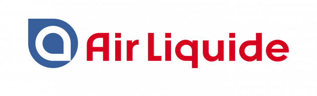
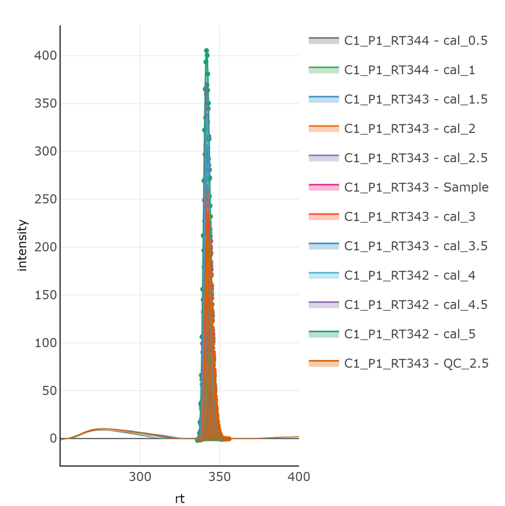

Die Institute der JRF werden vom
Land NRW institutionell gefördert
Land NRW institutionell gefördert
Mass resolution across a chromatographic peak
![Three columns compare diclofenac chromatograms sampled on a fixed time grid over the same 30-second window. Each intensity panel is normalized to its own MS1 apex and shown in relative arbitrary units, so absolute intensity magnitudes are not compared across instruments. The peak has a 10-second FWHM. TOF uses a 150-millisecond accumulation; Orbitrap MS1 scans become slower at higher resolution. Each modeled cycle records either MS1 or MS2, with equal spacing between successive events. A colored MS2 point follows every second high-intensity MS1. Red markers in the lower m/z plot show the selected diclofenac precursor during MS2 cycles, not fragment ions. MS2 relative intensity is illustrative, not measured. Cycle intervals are examples, not universal instrument settings. The m/z spread narrows from TOF 25,000 to Orbitrap 60,000 and 120,000.](../assets/diclofenac_eic_resolution_cyclegrid.svg)
Do you have any questions?

StreamFind (01.09.2022 - 31.08.2025)

StreamFind R package

Workflows demonstrated using the StreamFind R package


LC-UV based quantification

SEC-Raman based quality evaluation

Identification of monoclonal antibodies based on LC-HRMS
Non-target Screening based on LC-HRMS

Effluent from
conventional ozone injection
Guerrero-Granados et al. (2025)
ACS ES&T, 10.1021/acsestwater.5c00053
Workflows demonstrated using the StreamFind R package
Non-target Screening based on LC-HRMS
LC-UV based quantification
SEC-Raman based quality evaluation
Identification of monoclonal antibodies based on LC-HRMS
LC-UV based quantification
- 1: LoadChromatograms (native)
- 2: SmoothChromatograms (movingaverage)
- 3: CorrectChromatogramsBaseline (airpls)
- 4: IntegrateChromatograms (pracma)
- 5: QuantifyChromatographicPeaks (native)

Workflows demonstrated using the StreamFind R package
Non-target Screening based on LC-HRMS
LC-UV based quantification
SEC-Raman based quality evaluation
Identification of monoclonal antibodies based on LC-HRMS
Workflows demonstrated using the StreamFind R package
Non-target Screening based on LC-HRMS
LC-UV based quantification
SEC-Raman based quality evaluation
Identification of monoclonal antibodies based on LC-HRMS
The interface to the StreamFind R package
R scripting interface
library(StreamFind)
project <- MassSpecEngine$new(
metadata = list(
name = "Example project",
author = "Ricardo Cunha"
)
)
workflow <- Workflow(list(
Method_NonTargetAnalysis_FindFeatures(),
Method_NonTargetAnalysis_LoadFeaturesMS1(),
Method_NonTargetAnalysis_LoadFeaturesMS2()
))
project$Workflow <- workflow
project$run()R Shiny GUI

Same project model through a guided interface:
- Configure metadata and working directory
- Load analyses; assign replicate or blank groups
- Assemble, validate, and run workflows
- Inspect results, reports, and the audit trail
Persistent data at the center via DuckDB
R scripting, the Shiny GUI, and generated interactive reports all read and write the same on-disk project store — metadata, analyses, workflows, results, and audit trail.


However, the StreamFind R package is still not accessible to everyone

New project: CogniFlow


Can AI manage your analytical data?
Article: How Claude is accelerating protein design and analytical chemistry
https://www.anthropic.com/research/Claude-accelerates-protein-design

FAIR data builds confidence, skills, and regulatory integrity


Funded by: